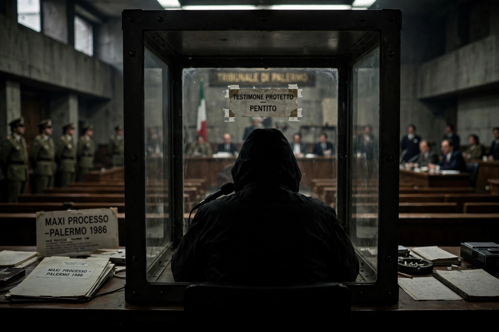

A pentito (Italian for "repentant"; plural pentiti) is a former member of a criminal or terrorist organisation — especially the Sicilian Mafia — who breaks the code of silence (omertà) and cooperates with prosecutors in exchange for reduced sentences and protection. The legal category was formalised during Italy's fight against terrorism in the 1970s–80s and extended to organised crime.

| Country | Italy |
|---|---|
| Context | Mafia, terrorism prosecutions |
Tommaso Buscetta, whose testimony to Judge Giovanni Falcone from 1984 revealed Cosa Nostra's structure and led to the Maxi Trial (1986–87) convicting hundreds, is the most famous. Salvatore Contorno and later Gaspare Mutolo also gave key evidence. Pentiti testimony proved decisive but controversial, with risks of false accusations for leniency.
The system weakened the Mafia after the 1992 murders of Falcone and Paolo Borsellino prompted further defections, though witness protection and credibility remain debated.